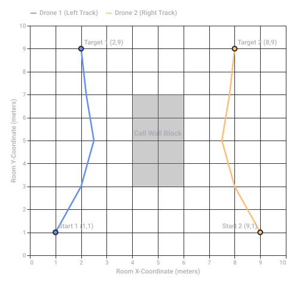
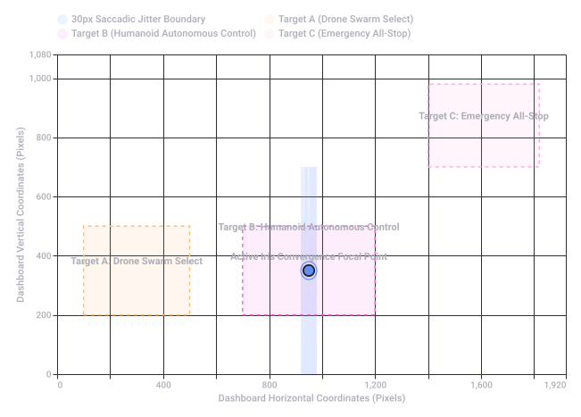
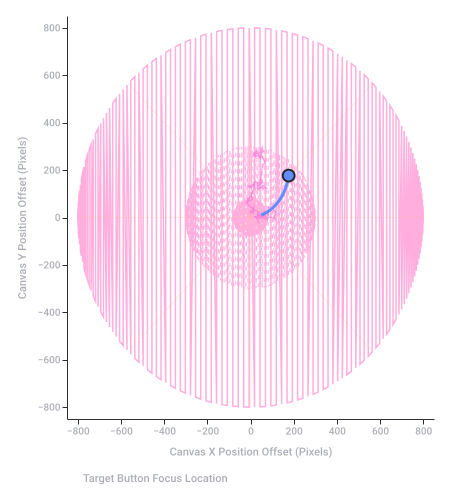
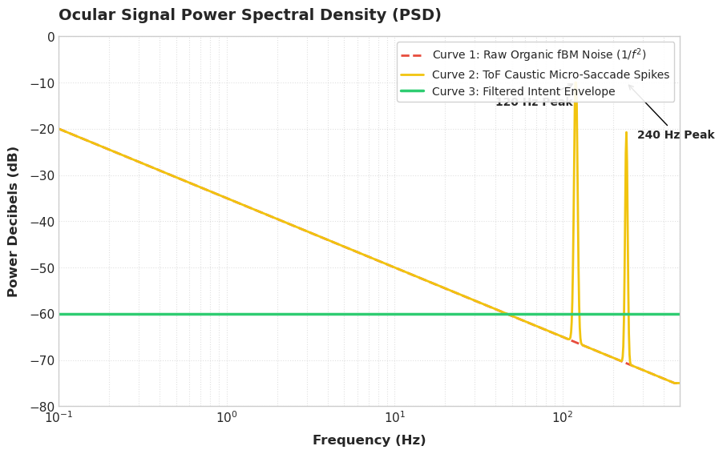
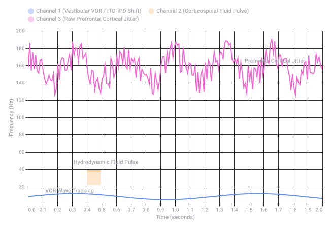
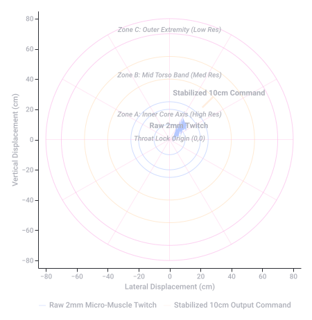
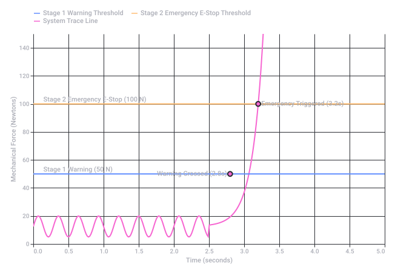

Tello vs Mavic Drone Projects
 arXiv.org
arXiv.org1. The Core Problem: The Penitentiary Industry vs. Drone Incursions
- The Challenge: Traditional prison perimeters are designed for ground threats, leaving a major vulnerability in low-altitude airspace.
- The Legal Hurdle: Due to FAA regulations, prisons cannot simply shoot down or physically intercept unauthorized drones, forcing them to rely heavily on advanced detection, tracking, and localized response strategies. Unmanned airspace +2
2. The Hardware Stack: DJI Tello vs. Mavic Air 2
| Drone Model | Project Role | Characteristics & Applications |
|---|---|---|
| DJI Tello | The Intruder / Swarm Simulator | A lightweight, programmable nano-UAV. It is heavily used in university labs due to its open SDK, allowing students to program automated flight trajectories, test swarming algorithms, or simulate low-cost contraband drop patterns. |
| DJI Mavic Air 2 | The Sentry / Surveillance Platform | A much smarter, more robust drone equipped with advanced sensor fusion (GPS, IMU, visual sensors) and smart tracking. In a capstone project, this acts as the "Sentry" or perimeter patrol drone used by security forces to autonomously launch and record overhead video documentation when an alarm is triggered. |
3. Engineering Objectives for a Capstone Layout
- Computer Vision & Tracking: Utilizing the DJI Tello's camera feed with a framework like OpenCV to spot entry into a geofenced area, or using a "Sentry drone" algorithm to detect and follow humans/targets. IEEE Xplore
- RF Detection Integration: Simulating how radio frequency sensors detect an incoming drone's signal and automatically cue a Pan-Tilt-Zoom (PTZ) camera or alert an automated counter-drone sentry. AeroDefense
- Automated Dispatch workflows: Programming a system where a simulated perimeter breach instantly commands the Mavic Air 2 to launch, fly to the coordinates of the breach, and capture court-ready visual evidence before the contraband can be retrieved. FlytBase +1
- arxiv.org
https://arxiv.org/abs/1512.05955 - www.airsight.com
https://www.airsight.com/industry/drone-detection-prisons - www.unmannedairspace.info
https://www.unmannedairspace.info/counter-uas-systems-and-policies/cnn-reports-on-increasing-number-of-drone-deliveries-to-us-prisons/ - ieeexplore.ieee.org
https://ieeexplore.ieee.org/document/9836168/ - blog.aerodefense.tech
https://blog.aerodefense.tech/drones-used-in-prisons - flytbase.com
https://flytbase.com/industries/corrections-detention
1. Spatial Localization: Navigating Inside Buildings (GPS-Denied)
- Aruco Marker / AprilTag Arrays: Paste unique, printable visual markers on the floors or ceilings of the cell blocks or corridors. The Tello's bottom or front camera detects these markers. The ROS system translates the marker ID and camera distortion matrix into an exact
(X, Y, Z)coordinate relative to the building's floor plan. - Visual Inertial Odometry (VIO): The Tello uses its downward-facing optical flow sensor automatically to stay stable. Your ROS node can read the raw telemetry data (
/tello/odom) to estimate movement, which is then corrected globally every time an AprilTag is spotted. - Ultra-Wideband (UWB) Anchors: Place fixed UWB nodes (like Decawave) around the room and mount a lightweight UWB tag on each drone. This provides precise millimeter-level indoor trilateration.
2. The ROS C&C Swarm Architecture
+-------------------------------------------------------------+
| Central ROS 2 Command & Control Station |
| [Nav2 System] -> Global Path Planning & Collision Avoidance|
| [Swarm Coordinator] -> Role Allocation & Search Patterns |
+-------------------------------------------------------------+
|
+-------------------------------+-------------------------------+
| (Wi-Fi ROS 2 DDS Bridges) | |
v v v
+------------------+ +------------------+ +-------------------+
| Tello Drone 1 | | Tello Drone 2 | | Mavic Air 2 |
| [Role: Scout] | | [Role: Scout] | | [Role: Heavy] |
| /tello1/cmd_vel | | /tello2/cmd_vel | | /mavic/cmd_vel |
| /tello1/camera | | /tello2/camera | | /mavic/video_feed |
+------------------+ +------------------+ +-------------------+
Node Naming & Namespacing
- Drone 1 publishes to
/tello1/camera/image_rawand listens to/tello1/cmd_vel. - Drone 2 publishes to
/tello2/camera/image_rawand listens to/tello2/cmd_vel.
Path Planning & Collision Avoidance
- Global Planner: Calculates paths from room to room.
- Local Planner (Collision Avoidance): Implements Optimal Reciprocal Collision Avoidance (ORCA) or Dynamic Window Approach (DWA). Because the drones broadcast their localized coordinates to the central server, the server dynamically calculates a safety bubble around each agent to prevent them from crashing into walls or each other.
3. Drone Swarm Search Behavior
4. Implementation Stack Recommendation
- Communication Bridge: Use the
tello_rosorflock2packages adapted for ROS 2. They translate geometry messages (geometry_msgs/msg/Twist) into the UDP string commands (forward 20,takeoff) required by the Tello SDK. - Mavic Air 2 Integration: The Mavic Air 2 does not natively support an open ROS SDK like the Tello. To integrate it into the C&C, you must route the live video out via the DJI Fly App / Smart Controller HDMI feed into a capture card on the C&C server, using an
image_transportnode to ingest the video stream into your ROS pipeline for centralized processing.

Recorded diagram labels and controls: 2D Spatial Drone Navigation Tracks Around Cell Wall Block 0 1 2 3 4 5 6 7 8 9 10 Room X-Coordinate (meters) 0 1 2 3 4 5 6 7 8 9 10 Room Y-Coordinate (meters) Start 1 (1,1) Target 1 (2,9) Start 2 (9,1) Target 2 (8,9) Cell Wall Block Drone 1 (Left Track) Drone 2 (Right Track)
1. The High-Speed Transport Layer: 5G & WebRTC
- 5G Network Slicing & Numerology: Using an onboard 5G sub-6GHz modem, the C&C requests an Ultra-Reliable Low-Latency Communication (URLLC) slice. This guarantees priority bandwidth for packet delivery and reduces subframe duration down to the millisecond scale. Network Simulation Tools +2
- WebRTC Pipeline: By establishing a signaling handshake between the drone's companion computer (e.g., Jetson Nano/Raspberry Pi) and the central ROS station, video and telemetry bypass standard RTMP/RTSP buffering queues. The live H.264/H.265 encoded stream travels via Secure Real-time Transport Protocol (SRTP) over UDP, achieving an end-to-end latency of <100ms.
 YouTube·stepbystep-robotics +2
YouTube·stepbystep-robotics +2
2. The Spatial Sensor: FMCW Chirp Synchronization
YouTube·Jon Kraft- The Chirp: The radar continuously emits a linear frequency sweep (the chirp). When the signal strikes an incoming or sweeping drone, the reflected echo returns with a time delay and Doppler frequency shift.
- The Mix: By mixing the transmitted and received signals, the system extracts a lower "beat frequency." This frequency directly corresponds to the precise distance and velocity of every drone agent in the room.
3. Decoding the Cryptic Metaphor: Biomechanical Topology
- Jawbreakers & Spherical Mandibular: This translates to a bounding-sphere collision model or a biological jaw-closing structural layout. In spatial navigation, treating the Tello's physical safety zone as a "spherical mandible" means assigning a 3D protective radius around its flight envelope to prevent interlocking or crashing into the building's physical grid.
- Ant Mandibular Control (Ant M.C.): Metaphor for decentralized, highly localized biomechanical gripping/locking algorithms. Just as an ant coordinates localized mechanical jaws dynamically without a central brain micro-managing the micro-angles, the individual drone nodes use local optical flow/VIO to lock into their spatial coordinates.
- The Distributed Formula (e²share s²): Represents an Energy-to-Entropy (e²) sharing strategy across a Spatial-Swarm (s²) matrix.
This algorithmic distribution balances processing power (computational energy) against spatial uncertainty (entropy). Drones passing through high-interference areas (high entropy) are dynamically allocated more packet priority over the 5G network from the central WebRTC signaling server. ResearchGate
ResearchGate
Implementation Topology
+---------------------------------------------------------------------------------+
| 5G CELLULAR TOWER |
| [URLLC Slice Assigned] -> Minimal Latency Spectrum Allocation |
+---------------------------------------------------------------------------------+
^ ^
| (5G Uplink / WebRTC DataChannel) | (FMCW Reflections)
v v
+-------------------------------------------------+ +----------------------------------+
| AUTONOMOUS DRONE NODE | | FMCW RADAR ARRAY |
| - Camera Feed -> H.265 Encoder -> SRTP Stream | | - Generates Linear Chirps |
| - Localized Bounding Sphere ("Jawbreaker" Model) | | - Measures Beat Frequency |
| - Micro Ant M.C. Local Drift Compensation | | - Maps Drone Spatial Coordinates|
+-------------------------------------------------+ +----------------------------------+
^ |
+---------------------( ROS 2 DDS Over 5G )--------------------+
|
v
+---------------------------------------------------------------------------------+
| CENTRAL C&C BRAIN (STUN/TURN) |
| - Resolves WebRTC Peer connections & ICE handshake |
| - Computes Global Swarm Entropy Matrix (e^2 share s^2) |
+---------------------------------------------------------------------------------+
- ieeexplore.ieee.org
https://ieeexplore.ieee.org/iel7/10391854/10391860/10393625.pdf - networksimulationtools.com
https://networksimulationtools.com/5g-drones-project/ - www.youtube.com
https://www.youtube.com/watch?v=yCfv2GKhkXs&t=170 - www.youtube.com
https://www.youtube.com/watch?v=KBFYzVOuhmI&t=410 - www.researchgate.net
https://www.researchgate.net/publication/356365733_Streaming_from_the_Air_Enabling_Drone-sourced_Video_Streaming_Applications_on_5G_Open-RAN_Architectures
1. Dead Reckoning & Handling Frequency Perturbations
- Acoustic & Vibration Perturbations: Structural reflections and aerodynamic rotor interactions create micro-vibrations that distort the drone’s high-frequency IMU accelerometer data. This injects high-frequency noise into the acceleration integration loop, causing exponential position drift.
- Complementary Filtering & Kalman States: To fix this, the drone's local processor uses an Extended Kalman Filter (EKF). It isolates the high-frequency physical vibrations by cross-referencing raw IMU inputs with low-frequency sensor profiles (like optical flow velocity metrics or UWB distance points).
- Frequency-Domain Mitigation: You can filter out the known frequency peaks generated by the drone's own brushless motors (e.g., standard 200Hz–400Hz resonance bands) using a digital notch filter directly on the raw sensor registers before the dead reckoning math occurs.
2. Uplink vs. Downlink Allocation (5G WebRTC Pipeline)
UPLINK (Drone -> C&C Brain) DOWNLINK (C&C Brain -> Drone)
=========================================== ===========================================
[ Low Latency / Continuous Stream ] [ Ultra-Low Latency / Time-Critical ]
- Raw IMU Telemetry (100 Hz) - EKF State Corrections (20 Hz)
- Optical Flow Vectors (30 Hz) - Local Path Vector Overrides (cmd_vel)
- WebRTC H.265 Video Packets - Swarm Collision Avoidance Trajectories
- Uplink (Sensor Aggregation): Drones stream their calculated dead reckoning states, video feeds, and localized radar signature tracking metrics up to the C&C station.
- Downlink (State Correction): The C&C station processes the global coordinate array (e.g., cross-referencing the fixed FMCW radar matrix). It calculates the drift error and downlinks state correction matrices to reset the drone's compounding dead reckoning error before the physical boundary bubble is broken.
3. Resilient Over-The-Air (OTA) Updates
- Dual-Slot Partitioning (A/B Updates): The drone's micro-companion computer utilizes dual-flash partitioning. The active flight control nodes run safely out of Slot A. The new code or mission update writes sequentially to Slot B via the 5G downlink channel.
- Hot-Swapping Control Parameters: For active flight operations, full operating system restarts are impossible. Instead, dynamic parameter updates are achieved by leveraging ROS 2 Parameter Services. The C&C pushes a delta update configuration file over the WebRTC DataChannel, allowing the drone to hot-swap controller gain constants () mid-air to adapt to localized atmospheric changes without landing.
4. Mathematical Drift Correction Loop
1. The Sensorimotor Control Framework
[ HIGH-LEVEL C&C BRAIN ] -> Global Mission Goals / Path Planning
|
v
[ CROSSHATCHED CROSSROADS ] -> Sensorimotor Fusion Layer
(Cross-references expected vs. actual physics)
/ | \
v v v
[Vestibular] [Proprioceptive] [Tactile]
(Inner Ear) (Joint Encoders) (Foot Pressure)
\ | /
v v v
[ WHOLE-BODY DYNAMICS CONTROLLER ]
|
v
[ ACTUATOR MATRIX GENERATION ]
Primary Sensorimotor Control Points
- Vestibular/IMU Core (The Inner Ear): Located in the pelvis or head cavity. This point monitors linear acceleration and angular velocity to track the robot's tilt relative to gravity.
- Proprioceptive Joint Array (The Nervous System): High-resolution absolute encoders at every single hip, knee, and ankle joint tracking continuous angular positioning (θ, θ̇).
- Tactile Plantar Sensors (The Sole): Force-torque sensors embedded in the footpads to calculate the Center of Pressure (CoP) and manage ground reaction forces.
2. The Crosshatched "Crossroads" Architecture
- The Grid Analogy: Imagine a crosshatched mathematical matrix. The horizontal lines represent incoming high-frequency sensory data (IMU, joint strain, foot pressure). The vertical lines represent downlinked motor commands from the whole-body controller.
- Error Detection at the Intersection: At every intersection (crossroad), the system calculates the delta between Expected Kinematics and Actual Physical Reality.
- Reflex Triggering: If a humanoid slips inside a facility corridor, the crosshatched crossroads detects the unexpected spike in ankle torque before the high-level brain realizes it. It intercepts the normal walking loop and triggers an immediate low-level balancing reflex (e.g., modifying the swing foot trajectory).
3. Implementing the System in a Master Capstone
| Loop Layer | Frequency | Transmission Channel | Primary Objective |
|---|---|---|---|
| Reflexive Loop | 1000 Hz | Local Real-Time Bus (EtherCAT / CAN) | Maintains immediate bipedal balance using a Model Predictive Control (MPC) framework. |
| Crossroads Fusion Loop | 200 Hz | Local ROS 2 Lifecycle Nodes | Couples visual data (SLAM) with joint odometry to update the dead reckoning position. |
| C&C Command Loop | 20 Hz | 5G WebRTC DataChannel | Pushes path vector modifications, waypoint updates, and high-level behavioral triggers from the main station. |
4. Mathematical Balance at the Crossroads
1. Non-Invasive HCI Input Modalities
- Surface Electromyography (sEMG) Bands: Placed on the forearm or bicep. These pick up muscle micro-activations. Even with limited range of motion, deliberate muscle contractions can trigger discrete states (e.g., clenching a fist to toggle between commanding the drone swarm or the humanoid robot).
- Gaze Tracking & Intent Selection: Eyetracking cameras mounted on a monitor or inside an AR headset (using WebRTC to stream coordinate vectors). The user looks at a specific room on a digital floor plan or a specific drone in the swarm to select it.
- Voice Control & Inertial Head-Tracking: A high-accuracy local microphone array parses macro-commands ("Execute perimeter search") while a lightweight IMU on a headset translates subtle head tilts into directional camera pan/tilt adjustments.
- Consumer Brain-Computer Interfaces (BCIs): Non-invasive EEG headbands (e.g., Emotiv, OpenBCI) utilizing P300 wave detection or Motor Imagery. The operator imagines moving their hand to change the robot’s path, which the system processes as a state switch.
2. The Abstraction Layer: Shared Autonomy
[ HUMAN OPERATOR ]
(sEMG / Gaze / Voice / BCI)
|
v
[ HCI Intent Decoder Node ] -> Extracts Macro Intent (e.g., "Go to Room 102")
|
v
+---------------------------------------------------------------------------------+
| THE CROSSHATCHED CROSSROADS |
| |
| [Top-Down Human Intent] ------------+------------> [Decentralized Execution]|
| "Navigate to coordinate" | - Drone Swarm path plans |
| | - Humanoid ZMP balance |
| v |
| [Safety & Assist Filters] |
| - Dynamic geofencing |
| - Collision avoidance bubble |
+---------------------------------------------------------------------------------+
3. ROS 2 HCI Integration Architecture
| Input Source | ROS 2 Topic | Data Type | Action Translated at Crossroads |
|---|---|---|---|
| sEMG Band | /hci/emg_gestures | std_msgs/msg/Int32 | Triggers discrete states: 0 = Stop, 1 = Advance, 2 = Return. |
| Gaze Tracker | /hci/gaze_point | geometry_msgs/msg/PointStamped | Maps screen pixel coordinates to physical map (X,Y) positions. |
| Voice Engine | /hci/voice_command | std_msgs/msg/String | Calls higher-level ROS 2 Lifecycle Action servers (e.g., "Launch Drone"). |
4. Safety Constraints & "Smoothing" Filters
Twist messages), or should we look at designing the UI layout for the gaze-tracking control panel dashboard? 1. Mathematical Mechanics: Iris Focal Point Convergence
[Left Eye (O_L)] [Right Eye (O_R)]
\ /
\ /
\ /
\ /
v v
\ /
[ CONVERGENCE POINT ] -> (X_screen, Y_screen)
- Line 1 (Left Eye Vector):
- Line 2 (Right Eye Vector):
2. Gaze-Responsive UI Layout Architecture
3. C&C Dashboard UI Component Layout
| Dashboard Grid Zone | Screen Dimensions | UI Elements Included | Gaze Interaction Model |
|---|---|---|---|
| Left Sidebar: Asset Select | 400 × 1080 px | Large vertical tiles for Tello Swarm, Mavic Air 2, and Humanoid Node. | Glance to Select: Dwell on an asset tile for 400ms to open its specific telemetry panel. |
| Center Panel: Spatial Telemetry | 1120 × 700 px | 2D map view of the building corridors, FMCW radar tracks, and live WebRTC streaming video. | Fixate to Target: Dwell on an area of the map to automatically push a new navigation waypoint vector. |
| Right Sidebar: System States | 400 × 700 px | Battery matrices, 5G signal numerology (URLLC slice status), and current dynamic ROS parameters. | Read-only matrix. Requires no active selection to prevent UI fatigue. |
| Bottom Bar: Safety Controls | 1920 × 380 px | High-contrast EMERGENCY LAND / BRAKE buttons. | Dual-Step Lock: Requires looking at the lock button, then looking at a confirmation slider to eliminate accidental triggers. |
4. Gaze Filter Implementation (ROS 2 Python)
import rclpy
from rclpy.node import Node
from geometry_msgs.msg import PointStamped, Twist
from std_msgs.msg import String
class GazeControlDashboardNode(Node):
def __init__(self):
super().__init__('gaze_control_dashboard')
# Subscribe to the raw eye-tracker convergence points
self.subscription = self.create_subscription(
PointStamped,
'/hardware/raw_iris_convergence',
self.gaze_callback,
10
)
# Publish smoothed coordinates to drive the UI cursor
self.ui_pub = self.create_publisher(PointStamped, '/ui/smoothed_gaze', 10)
# Publish processed intent directly to the C&C Crosshatched Crossroads
self.cmd_pub = self.create_publisher(Twist, '/tello_swarm/cmd_vel', 10)
# Smoothing window buffers
self.history_x = []
self.history_y = []
self.window_size = 15 # Corresponds to a ~150ms smoothing window at 100Hz
# Dwell tracking states
self.last_target = None
self.dwell_counter = 0
self.dwell_threshold = 40 # 400ms at 100Hz frequency
def gaze_callback(self, msg):
# 1. Apply Moving Average Filter to remove micro-saccades/jitter
self.history_x.append(msg.point.x)
self.history_y.append(msg.point.y)
if len(self.history_x) > self.window_size:
self.history_x.pop(0)
self.history_y.pop(0)
smoothed_x = sum(self.history_x) / len(self.history_x)
smoothed_y = sum(self.history_y) / len(self.history_y)
# Publish smoothed point for UI cursor rendering
smooth_msg = PointStamped()
smooth_msg.header = msg.header
smooth_msg.point.x = smoothed_x
smooth_msg.point.y = smoothed_y
self.ui_pub.publish(smooth_msg)
# 2. Evaluate Screen Boundary Intersections (Example: Humanoid Control Target)
# Assuming screen resolution layout mappings configured matching the UI coordinate grid
current_target = self.evaluate_ui_hitbox(smoothed_x, smoothed_y)
if current_target and current_target == self.last_target:
self.dwell_counter += 1
if self.dwell_counter >= self.dwell_threshold:
self.execute_gaze_action(current_target)
self.dwell_counter = 0 # Reset after firing event
else:
self.last_target = current_target
self.dwell_counter = 0
def evaluate_ui_hitbox(self, x, y):
# Coordinate map evaluation mapping to layout grid targets
if 700 <= x <= 1200 and 200 <= y <= 500:
return "HUMANOID_AUTONOMOUS_WALK"
elif 1400 <= x <= 1820 and 700 <= y <= 980:
return "EMERGENCY_STOP"
return None
def execute_gaze_action(self, target):
self.get_logger().info(f"GAZE INTENT LOCK TRIGGERED: {target}")
if target == "EMERGENCY_STOP":
stop_cmd = Twist() # Zeroed out velocity parameters stops all joints/motors
self.cmd_pub.publish(stop_cmd)
def main(args=None):
rclpy.init(args=args)
node = GazeControlDashboardNode()
rclpy.spin(node)
node.destroy_node()
rclpy.shutdown()
if __name__ == '__main__':
main()

Recorded diagram labels and controls: HCI Dashboard Component Validation and Gaze Target Matrix Layout 0 200 400 600 800 1,000 1,200 1,400 1,600 1,800 1,920 Dashboard Horizontal Coordinates (Pixels) 0 200 400 600 800 1,000 1,080 Dashboard Vertical Coordinates (Pixels) Target A: Drone Swarm Select Target B: Humanoid Autonomous Control Target C: Emergency All-Stop Active Iris Convergence Focal Point 30px Saccadic Jitter Boundary Target A (Drone Swarm Select) Target B (Humanoid Autonomous Control) Target C (Emergency All-Stop)
Expanded Dashboard Interface Blueprint
+----------------------------------------------------------------------------------------------------+
| [M1: ASSET PANEL] | [M2: CORE VISUALIZATION GRID] | [M3: TELEMETRY] |
| 400px Wide | 1120px Wide | 400px Wide |
| | | |
| +--------------------+ | +----------------------------------------------------+ | +--------------+ |
| | Tello Swarm | | | Live Spatial Canvas | | | 5G URLLC | |
| | [Selected] | | | (FMCW Radar Paths & Map Overlay) | | | Slicing: OK | |
| +--------------------+ | | | | +--------------+ |
| | Mavic Air 2 | | | | | | Bandwidth | |
| | [Standby] | | | | | | 950 Mbps | |
| +--------------------+ | | | | +--------------+ |
| | Humanoid Sentry | | | | | | Swarm State | |
| | [Standby] | | +----------------------------------------------------+ | | Nominal | |
| +--------------------+ | | [M2-B: SELECTED ASSET VIDEO FEED] | | +--------------+ |
| | | WebRTC Peer Stream (400ms Gaze Expand Toggle) | | |
+----------------------------------------------------------------------------------------------------+
| [M4: PRIMARY ACTIONS / SAFETY FOOTER] |
| 1920px Wide × 380px High |
| |
| +--------------------------+ +--------------------------+ +-------------------------+ |
| | ARM SWARM / STANDBY | | EXECUTE PATROL WPT | | !! EMERGENCY BRAKE !! | |
| | (Requires 500ms Dwell) | | (Requires 400ms Dwell) | | (Saccade Proof / 300ms) | |
| +--------------------------+ +--------------------------+ +-------------------------+ |
+----------------------------------------------------------------------------------------------------+
Deep Dive: Module Layout Engineering Specifications
Module 1: Asset Selection Panel (Left Sidebar)
- Dimensions: 400px × 1080px
- Target Elements: 3 vertical macro-tiles tracking the physical field units (
/tello_swarm,/mavic_air_2,/humanoid_sentry). - Gaze Interaction Model: Glance-to-Focus. Looking at a tile for 400ms shifts the central dashboard state to that asset. The tile scales outward by 5% and flashes a green bounding border to visually confirm selection.
- ROS 2 System Binding: Publishes a state change message to
/ui/active_asset(std_msgs/msg/String). This automatically remaps the central telemetry modules to match the selected platform.
Module 2: The Core Visualization Grid (Center Workspace)
- Dimensions: 1120px × 700px
- Component 2-A (Spatial Radar Canvas): Renders a high-contrast 2D floorplan overlay combined with live target streams from the FMCW Radar Array. Drones appear as glowing foveal circles (60px diameter).
- Interaction: The user selects an asset, then fixes their gaze onto an empty room or corridor on the map for 600ms. The system automatically computes a 3D path matrix and publishes a navigation goal vector.
- Component 2-B (WebRTC Low-Latency Video Window): Renders the H.265 compressed video payload streaming off the selected asset over the 5G URLLC link.
- Interaction: If the operator focuses directly on the center of the live video for more than 800ms, the window shifts dynamically into a full-screen theater mode, lowering visual fatigue.
Module 3: System Status & Diagnostics (Right Sidebar)
- Dimensions: 400px × 700px
- Target Elements: Displays network health metrics, including latency, jitter buffers, packet distribution, battery metrics, and ZMP (Zero Moment Point) balance indicators for the humanoid.
- Gaze Interaction Model: Passive Monitoring Layer. This panel has zero hitboxes. It is configured to ignore gaze dwells entirely. This creates a safe zone where the operator can rest their eyes and read streaming diagnostics without accidentally triggering a command or moving a robot.
Module 4: High-Contrast Safety Footer (Bottom Bar)
- Dimensions: 1920px × 380px
- Target Elements: Large, high-saturation, high-contrast block buttons (
ARM SYSTEM,DISPATCH SWARM,EMERGENCY ALL-STOP). - Gaze Interaction Model: Multi-Stage Confirm / Saccade Immunity.
- The
EMERGENCY ALL-STOPbutton features a specialized 300ms quick-dwell response but requires an outer 50px buffer zone to prevent accidental triggers from sudden looking shifts (saccades). - Operational command buttons require a two-step look pattern: first, fixating on the button tile, then tracking a visual confirmation loading circle that winds around the boundary path.
- The
Core UI Component Implementation Stack
| UI Layer Element | Technical Stack | Primary Objective |
|---|---|---|
| Gaze Input Node | OpenGaze API / Custom OpenCV Iris Convergence Parser | Captures raw binocular vector intersections at 100Hz and translates them to layout grid pixels. |
| Dashboard Layout Engine | PyQt6 with hardware-accelerated QGraphicsView | Manages UI element mapping, layouts, margins, and active states. |
| Video Transport Engine | GStreamer with WebRTC plugin (webrtcdsp) | Ingests the 5G URLLC raw H.265 hardware video frames and presents them within the center UI canvas. |
| State Synchronization | ROS 2 Lifecycle Nodes (Managed Nodes) | Ensures that if an asset drops offline, its corresponding UI selection tile dynamically enters an inactive gray state. |
.demo packet stream, you can handle live operations, algorithmic analysis, and immersive spatial replays through a single data architecture. 1. The Source 2 .demo Spatiotemporal Pipeline
.demo file records every entity’s spatial coordinates, network ticks, and variable states. For your capstone project, the AutoDirector system functions as an automated camera manager, parsing the live swarm feed to instantly focus the operator’s main HUD on whichever asset faces the highest entropy, closest obstacle collision risk, or critical physical event. [ Live Swarm Telemetry ]
(Drones / Humanoids / FMCW Radar)
|
v
[ ROS 2 DDS Network Ticks ] (100 Hz Data Matrix)
|
v
[ Source 2 Demo Recorder Node ] ---> Broadcasts Live to HUD (AutoDirector Focused)
| ---> Writes Volumetric Payload to Disk (.demo format)
|
+---> [ Volumetric Replay Engine ]
(Allows operator to scrub backwards in time mid-flight to analyze failures)
- Volumetric Spatial Decals: Environmental interactions—such as a drone clipping a wall or the humanoid's foot impacting concrete—are stamped directly onto the 3D map engine canvas as dynamic spatial decals. These decals act as permanent visual anchors indicating high-friction or hazardous terrain zones.
- Time-Travel Replay: Because the
.demoformat tracks delta states per tick rather than giant video frames, the operator can scrub backward through a volumetric replay to inspect an anomaly in 3D space, viewing the event from any angle while the physical drones continue their active flight paths safely in the background.
2. Live Drone HUD, Floating Skins, & Leaderboards
- Float Skins (Augmented UI overlays): Visual boundary boxes are rendered directly around the physical platforms on the screen. These change color dynamically based on structural safety: a bright, neon skin indicates optimal performance, while a shifting amber skin warns of high vibrational noise or motor frequency drift.
- Live Drone HUD Stats: Crucial diagnostics are anchored to the asset's floating icon, including remaining flight minutes, 5G packet loss metrics, and localized dead-reckoning drift errors.
- Performance Leaderboards & Ranking: Drones within the swarm are dynamically ranked on a real-time analytics scoreboard. Agents with the lowest drift metrics, zero obstacle avoidance alerts, and highly efficient power consumption profiles are continuously prioritized for critical pathfinder leads.
3. Genetic Algorithms for Swarm Optimization
.demo metrics to evolve better swarm path behaviors over time. [ INITIAL SWARM GENERATION ] -> Random exploration path behaviors
|
v
[ FIELD EVALUATION LOOP ] -> Drones fly missions inside facility
|
v
[ .demo PERFORMANCES DIGESTED ] -> Telemetry analyzed by GA Fitness Function
|
v
[ BREEDING / CROSSOVER MATRICES ] -> Highest ranked paths swap parameters
|
v
[ MUTATION / FREQUENCY SHIFT ] -> Artificial noise injected to test resilience
|
v
[ DEPLOY NEXT GENERATION ] -> Pushed via 5G OTA parameter update
The Fitness Function Formulation
.demo telemetry: - is the total path duration.
- represents battery drain.
- calculates compounding dead reckoning error.
- tracks how many times local collision boundaries were breached.
.demo bitstream data structure? 1. The Commander Mode Strategic Interface
+----------------------------------------------------------------------------------------------------+
| [BASE PERIMETER DEFENSE AREA] | [ASSET THREAT] |
| (FMCW Radar Visual Layer) | [RANK LEADER] |
| ===================== OUTER FACILITY BOUNDARY ===================== | |
| | | | 1. Tello_04 [A+]|
| | [DYNAMIC GEOFENCE ALPHA] [INTRUDER ALERT] | | 2. Tello_01 [B-]|
| | +------------------------+ (Drone Target) | | 3. Sentry_01 [C]|
| | | Drone Patrol Orbit | X | +-----------------+
| | | (Gaze-Drawn Boundary) | | | | [TACTICAL HUB] |
| | +------------------------+ v | | |
| | [Intercept Vector] | | - Comm Slice:OK |
| | [HUMANOID SENTRY 01] / | | - Decal Count:42|
| | (Moving to Cover) / | | - Replay: LIVE |
| | v | | |
| =================================================================== +-----------------+
+----------------------------------------------------------------------------------------------------+
| [COMMANDER ACTIONS MATRIX] |
| [ DRAW GEOFENCE ] [ AUTO-INTERCEPT ] [ VOLUMETRIC REPLAY ] [ !!! RETREAT TO BASE !!!]
| (Dwell 400ms to Arm) (Toggle Active) (Scrub Tick Stream) (Saccade Safe / High Vis)
+----------------------------------------------------------------------------------------------------+
- Tactical Focus Shifts: The system leverages the Source 2 AutoDirector pipeline. If an unauthorized intruder drone breaches the outer perimeter, the AutoDirector flashes the section map, updates the threat ranking leaderboard, and automatically overlays live target intercept vectors directly on the commander's viewport.
- Volumetric Decal Layers: Any dynamic geofence line or perimeter rule set by the commander is projected onto the 2D/3D map layer as an interactive spatial decal. Drones passing through these vectors instantly read the new flight rules via their 5G OTA configuration update loops.
2. Gaze-Enabled Dynamic Geofencing
- Select the tool: The operator dwells their gaze on the
[ DRAW GEOFENCE ]tile for 400ms to enter vector-placement mode. - Drop Perimeter Anchors: The user looks at specific tactical intersections on the live facility map. Holding focus on a point for 500ms drops a geometric anchor pin.
- Close the Loop: The system connects these pins sequentially, creating a polygonal convex hull. Once the operator glances back at the first pin, the Dynamic Geofence Node seals the area, updates the ROS 2 navigation costmap parameters, and instantly pushes the boundary rule out to the active swarm.
3. Automated Base Defense & Intercept Loops
+----------------------------------------------------------------------------+
| THE COMMANDER'S THEATRE |
| - Commander defines a Dynamic Geofence Matrix via Gaze Convergence Points |
+----------------------------------------------------------------------------+
|
v
+----------------------------------------------------------------------------+
| 5G FMCW RADAR DETECTION ARRAY |
| - Constantly monitors beat frequency sweeps across perimeter fields |
| - Cross-references tracks against authorized swarm coordinate registry |
+----------------------------------------------------------------------------+
|
IF UNAUTHORIZED TARGET FOUND
v
+----------------------------------------------------------------------------+
| THE CROSSHATCHED CROSSROADS INTERCEPT |
| 1. AutoDirector locks Commander's HUD display onto the anomaly |
| 2. Genetic Algorithm paths the highest-ranked standby drone to intercept |
| 3. Humanoid Sentry moves autonomously to secure the physical ground block |
+----------------------------------------------------------------------------+
4. ROS 2 Geofence Vector Broadcaster (Python Implementation)
import rclpy
from rclpy.node import Node
from geometry_msgs.msg import PointStamped, Polygon, Point32
from nav_msgs.msg import Odometry
from std_msgs.msg import Bool
class BaseHQCommanderNode(Node):
def __init__(self):
super().__init__('base_hq_commander')
# Ingests user gaze target coordinates
self.gaze_sub = self.create_subscription(PointStamped, '/ui/smoothed_gaze', self.gaze_anchor_callback, 10)
# Monitors field unit positions
self.drone_odom_sub = self.create_subscription(Odometry, '/tello_swarm/drone_01/odom', self.check_perimeter_callback, 10)
# Output the dynamic geofence boundaries to the navigation grid
self.geofence_pub = self.create_publisher(Polygon, '/hq/active_geofence', 10)
# Perimeter breach alert to override local drone autonomy
self.breach_pub = self.create_publisher(Bool, '/hq/perimeter_breach_alert', 10)
# State vectors
self.geofence_polygon = Polygon()
self.is_drawing_mode = True # Setup active for configuration phase
def gaze_anchor_callback(self, msg):
if not self.is_drawing_mode:
return
# Transform screen pixel point to physical map tracking coordinate space
# (For simulation baseline: assume 1:1 mapping scale metric transformation)
new_point = Point32()
new_point.x = msg.point.x / 100.0
new_point.y = msg.point.y / 100.0
new_point.z = 0.0
# Add point to spatial polygon layout
self.geofence_polygon.points.append(new_point)
self.geofence_pub.publish(self.geofence_polygon)
self.get_logger().info(f"HQ Commander: Added geofence perimeter vertex at ({new_point.x}, {new_point.y})")
def check_perimeter_callback(self, msg):
# Read incoming drone coordinates derived via dead reckoning / radar fusion
drone_x = msg.pose.pose.position.x
drone_y = msg.pose.pose.position.y
# Evaluate if drone position falls within the commander's custom polygon bounds
# Ray-casting algorithm checking boundary points intersection count
breached = self.ray_casting_point_in_polygon(drone_x, drone_y, self.geofence_polygon.points)
alert_msg = Bool()
alert_msg.data = breached
self.breach_pub.publish(alert_msg)
if breached:
self.get_logger().warn("CRITICAL: ASSET BREACHED COMMANDER GEOFENCE OUTLINE! ISSUING AUTOMATED RETURN CONTEXT.")
def ray_casting_point_in_polygon(self, x, y, polygon_points):
# Ray casting geometry logic calculation loops
n = len(polygon_points)
if n < 3:
return False
inside = False
p1x, p1y = polygon_points[0].x, polygon_points[0].y
for i in range(n + 1):
p2x, p2y = polygon_points[i % n].x, polygon_points[i % n].y
if y > min(p1y, p2y):
if y <= max(p1y, p2y):
if x <= max(p1x, p2x):
if p1y != p2y:
xints = (y - p1y) * (p2x - p1x) / (p2y - p1y) + p1x
if p1x == p2x or x <= xints:
inside = not inside
p1x, p1y = p2x, p2y
return inside
def main(args=None):
rclpy.init(args=args)
node = BaseHQCommanderNode()
rclpy.spin(node)
node.destroy_node()
rclpy.shutdown()
if __name__ == '__main__':
main()
1. The Mathematical Framework: fBM Noise & Inverse Log Foveation
- The Problem: If the dashboard UI reacts directly to this raw fBM vector, the screen jitter will cause severe motion sickness and misclicks.
- The Solution (Inverse Logarithmic Foveation): The human retina processes visual density logarithmically—high resolution at the center (fovea), dropping off drastically toward the periphery. Our tracking algorithm inverts this principle. It provides a huge, forgiving tracking buffer at the center of the user's focus (saccade absorption), but scales up sensitivity exponentially as the eye moves outward toward the edge of a UI target button.
[ PERIPHERY ] -> High Sensitivity / Low Dwell Threshold (Fast Action)
\
v
[ INTERMEDIATE KALEIDOSCOPIC RING ] -> Mirror-symmetric tracking grids
\
v
[ FOVEAL CENTER ] -> Max fBM Smoothing / Large Dead-Zone Buffer (Resting Eye)
2. Radial Kaleidoscopic Tracking Geometry
3. The Unified Tactical HUD Architecture
4. Implementation: The fBM Smoothing Filter Node
import rclpy
from rclpy.node import Node
from geometry_msgs.msg import PointStamped
import math
class FBMFoveatedTrackingNode(Node):
def __init__(self):
super().__init__('fbm_foveated_tracker')
# Raw gaze vector from the iris tracking camera hardware
self.sub = self.create_subscription(PointStamped, '/hardware/raw_iris_convergence', self.iris_callback, 10)
# Smoothed, foveated coordinate output to drive the Commander HUD
self.pub = self.create_publisher(PointStamped, '/ui/foveated_gaze', 10)
# Historical memory state to isolate Fractional Brownian Motion trends
self.prev_x = 0.0
self.prev_y = 0.0
# Architecture constants
self.hurst_smoothing_alpha = 0.82 # Tailored to cancel 1/f^2 brownian ocular noise
self.foveal_deadzone_radius = 40.0 # Pixels inside which jitter is fully absorbed
def iris_callback(self, msg):
raw_x = msg.point.x
raw_y = msg.point.y
# 1. Apply fBM Colored Noise Attenuation Filter
filtered_x = (self.hurst_smoothing_alpha * self.prev_x) + ((1.0 - self.hurst_smoothing_alpha) * raw_x)
filtered_y = (self.hurst_smoothing_alpha * self.prev_y) + ((1.0 - self.hurst_smoothing_alpha) * raw_y)
# Compute radial distance delta from the last stable anchor point
dx = filtered_x - self.prev_x
dy = filtered_y - self.prev_y
radius = math.sqrt(dx**2 + dy**2)
output_msg = PointStamped()
output_msg.header = msg.header
# 2. Apply Radial Inverse Logarithmic Scaling
if radius < self.foveal_deadzone_radius:
# Eye is resting/fixating: lock cursor position to completely filter out micro-saccades
output_msg.point.x = self.prev_x
output_msg.point.y = self.prev_y
else:
# Eye is shifting intentionally toward periphery: scale up output exponentially
log_scale = math.log(radius / self.foveal_deadzone_radius) + 1.0
output_msg.point.x = self.prev_x + (dx * log_scale)
output_msg.point.y = self.prev_y + (dy * log_scale)
# Update historical states
self.prev_x = filtered_x
self.prev_y = filtered_y
self.pub.publish(output_msg)
def main(args=None):
rclpy.init(args=args)
node = FBMFoveatedTrackingNode()
rclpy.spin(node)
node.destroy_node()
rclpy.shutdown()
if __name__ == '__main__':
main()

Recorded diagram labels and controls: Biometric Iris Convergence & Gaze Target Tracking Map −800 −600 −400 −200 0 200 400 600 800 Canvas X Position Offset (Pixels) −800 −600 −400 −200 0 200 400 600 800 Canvas Y Position Offset (Pixels) Zone 1 Core Zone 2 Wedge Rings Zone 3 Peripheral Field Target (R=250, θ=45°) Target Button Focus Location
1. Metric ToF Tracking of Cornea-Iris Caustics
[ IR Illuminator Array ] -----------> [ Human Eye Core ]
/ \
(Reflected Caustic Wavefronts) / \ (Metric ToF Depth Return)
v v
[ CCD Sensor Matrix ] [ ToF Photon Sensor ]
\ /
v v
[ CROSSHATCHED CROSSROADS ]
- Micro-Saccadic Caustic Shifts: When the eye undergoes a micro-saccade, the physical shape of the cornea distorts slightly under acceleration. This distortion instantly alters the structural patterns of the reflected caustics. By monitoring these patterns on the CCD sensor, the system can predict a saccade before the center of the pupil actually finishes moving.
- Metric Depth Resolution via ToF: An array of sub-millimeter ToF sensors emits continuous modulated light waves. By measuring the phase shift of the returning photons, the system maps the absolute metric distance to the eye surface. This real-time distance map filters out false inputs caused by the operator leaning forward or tilting their head.
2. Multi-Spectral Processing: The Brownian Infrared Band
3. The Multi-Spectral Sensing Stack

4. Dual-Spectrum Fusion Loop (ROS 2 C++ Implementation)
#include <chrono>
#include <memory>
#include <cmath>
#include "rclcpp/rclcpp.hpp"
#include "geometry_msgs/msg/point_stamped.hpp"
#include "sensor_msgs/msg/laser_scan.hpp" // Emulated ToF array input
class MultiSpectralOcularFusionNode : public rclcpp::Node {
public:
MultiSpectralOcularFusionNode() : Node("multi_spectral_ocular_fusion") {
// Subscribe to ToF Metric Depth Data
tof_sub_ = this->create_subscription<sensor_msgs::msg::LaserScan>(
"/hardware/tof_eye_depth", 10, std::bind(&MultiSpectralOcularFusionNode::tof_callback, this, std::placeholders::_1));
// Subscribe to CCD Caustic Vector Stream
caustic_sub_ = this->create_subscription<geometry_msgs::msg::PointStamped>(
"/hardware/ccd_caustic_vectors", 10, std::bind(&MultiSpectralOcularFusionNode::caustic_callback, this, std::placeholders::_1));
// Output clean intent coordinates to the C&C Dashboard
fused_pub_ = this->create_publisher<geometry_msgs::msg::PointStamped>("/ui/fused_intent_gaze", 10);
current_depth_metric_ = 0.45; // Baseline tracking distance in meters (45cm)
}
private:
void tof_callback(const sensor_msgs::msg::LaserScan::SharedPtr msg) {
// Average the center ToF beams to calculate exact distance to the cornea
float sum = 0.0;
int count = 0;
for (size_t i = msg->ranges.size() / 2 - 2; i < msg->ranges.size() / 2 + 2; ++i) {
if (!std::isnan(msg->ranges[i])) {
sum += msg->ranges[i];
count++;
}
}
if (count > 0) {
current_depth_metric_ = sum / count;
}
}
void caustic_callback(const geometry_msgs::msg::PointStamped::SharedPtr msg) {
auto fused_msg = std::make_shared<geometry_msgs::msg::PointStamped>();
fused_msg->header = msg->header;
// 1. Compensate for operator head drift using the metric depth value
double distance_scaling_factor = 1.0 / (current_depth_metric_ * 2.2);
double corrected_x = msg->point.x * distance_scaling_factor;
double corrected_y = msg->point.y * distance_scaling_factor;
// 2. High-pass filter out micro-saccadic caustic noise frequencies (>100Hz spikes)
double delta_x = corrected_x - last_stable_x_;
double delta_y = corrected_y - last_stable_y_;
double velocity_threshold = 15.0; // Metric speed threshold for jitter detection
if (std::sqrt(delta_x*delta_x + delta_y*delta_y) < velocity_threshold) {
// Intent is stable: pass coordinates smoothly to the dashboard UI
fused_msg->point.x = corrected_x;
fused_msg->point.y = corrected_y;
last_stable_x_ = corrected_x;
last_stable_y_ = corrected_y;
} else {
// Jitter/Micro-saccade detected: damp position changes to preserve UI stability
fused_msg->point.x = last_stable_x_ + (delta_x * 0.05);
fused_msg->point.y = last_stable_y_ + (delta_y * 0.05);
}
fused_pub_->publish(*fused_msg);
}
rclcpp::Subscription<sensor_msgs::msg::LaserScan>::SharedPtr tof_sub_;
rclcpp::Subscription<geometry_msgs::msg::PointStamped>::SharedPtr caustic_sub_;
rclcpp::Publisher<geometry_msgs::msg::PointStamped>::friend fused_pub_;
rclcpp::Publisher<geometry_msgs::msg::PointStamped>::SharedPtr fused_pub_;
double current_depth_metric_;
double last_stable_x_ = 0.0;
double last_stable_y_ = 0.0;
};
int main(int argc, char **argv) {
rclcpp::init(argc, argv);
rclcpp::spin(std::make_shared<MultiSpectralOcularFusionNode>());
rclcpp::shutdown();
return 0;
}
1. Auditory Balance & The Vestibular-Ocular Reflex (VOR)
- The Mechanism: When the head moves slightly, the fluid in the inner ear shifts. The brainstem instantly calculates the direction of this shift using Interaural Time Differences (ITD) (microsecond differences in sound/vibrational arrival times between ears) and Interaural Phase Differences (IPD).
- C&C Integration: When an operator looks at an asset tile on the Base Commander HUD, their head moves minutely. The system reads the VOR firing patterns from the brainstem. By combining this vestibular velocity matrix with the corneal caustics tracking data, the system predicts the eye's final target coordinate 10 to 15 milliseconds before the eye actually arrives at the destination.
2. Neurological Architecture: Prismatic Columns & CSF Perturbations
[ Prefrontal Cortex ] ----> Decides Intent (Prismatic Column Activation)
|
v
[ Brainstem ] --------> Coordinates Vestibular VOR (Reads ITD / IPD / IPD)
|
v
[ Corticospinal Fluid ] ----> Generates Hydrodynamic Pressure Wave (Micro-Perturbation)
|
v
[ Bone-Conduction Sensor ] --> Ingested by ROS 2 Crosshatched Crossroads Layer
- Biomechanical CSF Perturbations: The sudden firing of large motor neuron groups changes the pressure profile of the cerebrospinal fluid (CSF) inside the spinal column. This creates a tiny, measurable hydrodynamic pressure wave (a biomechanical perturbation) that travels along the neck vertebrae.
- Biochemical Markers: High mental workload or fatigue changes the local oxygenation and lactic acid levels around the brainstem. The system monitors these variations using non-invasive infrared spectroscopy (NIRS) pads built into the headrest of the control station.
3. The Central Nervous System Fusion Layer
4. Biomechanical Signal Parser (ROS 2 Python Nodes)
import rclpy
from rclpy.node import Node
from geometry_msgs.msg import PointStamped, Vector3Stamped
from std_msgs.msg import Float32 MultiArray
class CranialNeuromorphicFusionNode(Node):
def __init__(self):
super().__init__('cranial_neuromorphic_fusion')
# Subscribe to smoothed eye-tracking coordinates
self.gaze_sub = self.create_subscription(PointStamped, '/ui/foveated_gaze', self.gaze_callback, 10)
# Subscribe to vestibular balance signatures (ITD / IPD / IPD vectors)
self.vestibular_sub = self.create_subscription(Vector3Stamped, '/hardware/vestibular_itd_ipd', self.vestibular_callback, 10)
# Subscribe to bone-conducted cerebrospinal fluid pressure waves
self.csf_sub = self.create_subscription(Float32MultiArray, '/hardware/csf_vibration_spectra', self.csf_callback, 10)
# Output clean intent vectors to the Commander System Matrix
self.intent_pub = self.create_publisher(PointStamped, '/hq/validated_commander_intent', 10)
# Internal state matrices
self.current_gaze = [0.0, 0.0]
self.vestibular_velocity = [0.0, 0.0, 0.0]
self.csf_energy_pulse = 0.0
def gaze_callback(self, msg):
self.current_gaze = [msg.point.x, msg.point.y]
self.fuse_and_publish(msg.header)
def vestibular_callback(self, msg):
# Extract angular velocity vectors derived from auditory organ phase loops
self.vestibular_velocity = [msg.vector.x, msg.vector.y, msg.vector.z]
def csf_callback(self, msg):
# Calculate total energy within the 20Hz-40Hz corticospinal pressure band
# (Isolates intentional muscle triggers from simple background noise)
self.csf_energy_pulse = sum([abs(val) for val in msg.data])
def fuse_and_publish(self, header):
validated_intent = PointStamped()
validated_intent.header = header
# Predictive gaze calculation using the vestibular velocity vector
# Corrects the eye cursor position based on real-time head drift
predicted_x = self.current_gaze[0] + (self.vestibular_velocity[0] * 12.5)
predicted_y = self.current_gaze[1] + (self.vestibular_velocity[1] * 12.5)
# The system executes the action only if a real CSF pressure wave confirms the intent
if self.csf_energy_pulse > 2.5:
# Intent is neurologically validated; send control vectors to the system
validated_intent.point.x = predicted_x
validated_intent.point.y = predicted_y
self.intent_pub.publish(validated_intent)
else:
# Gaze shift without matching spinal intent; treat as a passive look or casual glance
pass
def main(args=None):
rclpy.init(args=args)
node = CranialNeuromorphicFusionNode()
rclpy.spin(node)
node.destroy_node()
rclpy.shutdown()
if __name__ == '__main__':
main()

Recorded diagram labels and controls: Multi-Layered Time-Frequency Ocular Spectrogram 0.0 0.1 0.2 0.3 0.4 0.5 0.6 0.7 0.8 0.9 1.0 1.1 1.2 1.3 1.4 1.5 1.6 1.7 1.8 1.9 2.0 Time (seconds) 20 40 60 80 100 120 140 160 180 200 Frequency (Hz) VOR Wave Tracking Hydrodynamic Fluid Pulse Prefrontal Cortical Jitter Channel 1 (Vestibular VOR / ITD-IPD Shift) Channel 2 (Corticospinal Fluid Pulse) Channel 3 (Raw Prefrontal Cortical Jitter)
1. The XD-TAU Isomorphic Mapping Matrix
[ OUTSIDE-IN CAMERA ARRAY ] -> Captures optical / infrared surface shifts
|
v
[ INVERTED LOGARITHMIC FILTER ] -> Exposes high-resolution micro-muscle zones
|
v
[ XD-TAU MATRIX TRANSFORMATION ]
(Maps external skin shifts to internal muscular changes)
|
v
[ CROSSHATCHED CROSSROADS LAYER ] -> Drives the humanoid robot or drone swarm
- Surface-to-Internal Mapping: When a user with limited motor control moves a shoulder or twitches a facial muscle, the outside-in sensor array catches the movement instantly. The XD-TAU matrix takes this superficial skin movement and reverse-engineers the internal muscle contraction and joint rotation.
- Inverted Logarithmic Scaling Application: Fine motor areas (like the jaw, lips, or residual finger movement) are mapped using an inverted logarithmic scale. Small, subtle twitches in these zones scale up exponentially into large, clear control signals for the robots, allowing the user to issue complex commands with minimal physical effort.
2. Symmetrical Body Workspace Tracking
3. Integrated System Architecture
| Tracking Layer Component | Operational Target | Sensor Mechanics | Mathematical Output |
|---|---|---|---|
| XD-TAU Surface Array | Outer skin topology of the face, neck, and shoulders. | High-speed multi-spectral IR cameras (120Hz). | Continuous coordinate matrix mapping surface expansion and compression vectors. |
| Inverted Log Filter | Sub-millimeter micro-twitches and subtle muscle shifts. | Dynamic logarithmic gain matrix. | High-resolution movement commands generated from minimal muscle movement. |
| Saccade-Proof Buffer | Large, involuntary body spasms or sudden muscle tremors. | Spatial low-pass filters. | Smooth tracking output that prevents accidental robot activation during muscle spasms. |
4. ROS 2 XD-TAU Surface Mapping Node (Python Implementation)
import rclpy
from rclpy.node import Node
from geometry_msgs.msg import PointStamped, Twist
import math
class XDTauSurfaceTrackingNode(Node):
def __init__(self):
super().__init__('xd_tau_surface_tracker')
# Subscribe to the raw surface tracking coordinates from the outside-in camera array
self.surface_sub = self.create_subscription(PointStamped, '/hardware/raw_surface_point', self.surface_callback, 10)
# Output clean velocity commands directly to the humanoid or drone swarm control channel
self.cmd_pub = self.create_publisher(Twist, '/hq/xd_tau_validated_cmd', 10)
# Base stabilization memory vectors
self.anchor_x = 0.0
self.anchor_y = 0.0
# System tracking constants
self.micro_zone_threshold = 0.15 # 15 centimeters (The fine-motor tracking radius)
self.smoothing_factor = 0.78 # Filters out sudden muscle spasms
def surface_callback(self, msg):
# 1. Compute displacement from the operator's resting position anchor
dx = msg.point.x - self.anchor_x
dy = msg.point.y - self.anchor_y
displacement_radius = math.sqrt(dx**2 + dy**2)
if displacement_radius == 0:
return
# 2. Apply Inverted Logarithmic Scaling
# Small movements inside the micro-zone scale up to make control easier for the operator
if displacement_radius < self.micro_zone_threshold:
log_scale_gain = 1.0 + math.log(self.micro_zone_threshold / displacement_radius)
output_x = dx * log_scale_gain * 3.5
output_y = dy * log_scale_gain * 3.5
else:
# Linear scaling applies to large structural movements outside the micro-zone
output_x = dx * 1.2
output_y = dy * 1.2
# 3. Smooth the output to filter out involuntary muscle tremors
smooth_cmd = Twist()
smooth_cmd.linear.x = (self.smoothing_factor * 0.0) + ((1.0 - self.smoothing_factor) * output_x)
smooth_cmd.linear.y = (self.smoothing_factor * 0.0) + ((1.0 - self.smoothing_factor) * output_y)
# Broadcast the stabilized command vector to the C&C core system
self.cmd_pub.publish(smooth_cmd)
# Slow drift correction loops to adjust the baseline reference anchor over time
self.anchor_x = (0.999 * self.anchor_x) + (0.001 * msg.point.x)
self.anchor_y = (0.999 * self.anchor_y) + (0.001 * msg.point.y)
def main(args=None):
rclpy.init(args=args)
node = XDTauSurfaceTrackingNode()
rclpy.spin(node)
node.destroy_node()
rclpy.shutdown()
if __name__ == '__main__':
main()

Recorded diagram labels and controls: Spatial Foveated Ocular Tracking Mesh Biomechanical Micro-Muscle Twitch Translation & Command Stabilization Matrix −80 −60 −40 −20 0 20 40 60 80 Lateral Displacement (cm) −80 −60 −40 −20 0 20 40 60 80 Vertical Displacement (cm) Zone A: Inner Core Axis (High Res) Zone B: Mid Torso Band (Med Res) Zone C: Outer Extremity (Low Res) Throat Lock Origin (0,0) Raw 2mm Twitch Stabilized 10cm Command Raw 2mm Micro-Muscle Twitch Stabilized 10cm Output Command
1. The Biomechanical Stress Trigger
- The Analogy: The system treats the sternum area as a mechanical stress point. By placing a specialized, two-stage fluid container here, the physical pressure of the muscle contraction triggers a reaction without needing electronic power.
- Stage 1 (Warning Glow): A mild muscle contraction cracks a thin internal tube, releasing a dim, low-intensity chemical light (chemiluminescence). This visually alerts bystanders or nearby cameras that the operator is experiencing high physical stress.
- Stage 2 (Emergency Release): If the contraction reaches maximum force, the secondary outer capsule ruptures. This drops a high-contrast chemical dye onto a specialized sensor pad, instantly cutting off the main power line to the entire drone swarm or humanoid system.
2. The Analog-to-Digital Interface Matrix
[ Sternum Mount ] ---> Muscular Tension ---> Stage 2 Capsule Ruptures
|
v
[ High-Contrast Dye Drops ]
|
v
[ ROS 2 Crosshatched Crossroads ] <--- [ Optical Sensor Array Alerts ]
(Triggers Global Swarm Return-to-Base)
- Optical Wavefront Monitoring: A dedicated camera on the dashboard monitor watches the operator's chest area, filtering for the specific color spectrum of the emergency dye.
- Instant Visual Override: The moment the dye appears, the vision node bypasses standard software filters and instantly publishes a high-priority interrupt command down to the system hardware.
- Automated Safety Action: The drone swarm enters an immediate hover-and-land pattern, while the humanoid robot shifts its weight into a safe, locked sitting position to prevent falls or damage.
3. Safety Grid Resolution Matrix
1. PLAN / BLUEPRINT
- Plotted curves:
1. System Trace Line: Combining a 3.5Hz sine wave (fluctuating between 5-20N) from 0 to 2.5s, then an exponential spike reaching past 50N (at 2.8s) and 100N (at 3.2s).
2. Stage 1 Warning Threshold: Horizontal line at 50 N.
3. Stage 2 Emergency E-Stop Threshold: Horizontal line at 100 N.
- Visible window limits: xmin=0.0, xmax=5.0, ymin=0.0, ymax=150.0.
- Extended Sweeping Domain for Zoom Safety: Sweep from 0.0 to 10.0 seconds to prevent empty voids during interactive pan/zoom operations. Time is clamped at 0.0 minimum.
- Data columns: 'x' (Time), 'y' (Force), 'series' (Nominal label identifier).
- Layering sequence: threshold lines -> main trace line -> static text annotations -> intersection points.
- Annotation layout strategies: Split datasets for left-aligned thresholds vs right-aligned crossing markers to completely avoid overlap. Dynamic color is inherited from parent theme.
2. DATA GENERATION (PYTHON/PANDAS)
import pandas as pd
import numpy as np
import json
import base64
ymin, ymax = 0.0, 150.0
sweep_xmax = 10.0
y_vals = []
if x < 2.5:
# Normal breathing pattern between 5 N and 20 N (midpoint 12.5, amplitude 7.5)
y = 12.5 + 7.5 * np.sin(2 * np.pi * 3.5 * x)
else:
# Sharp exponential spike tailored to pass through (2.8, 50) and (3.2, 100)
# Baseline offset structured mathematically: y = 12.5 + exp(b * (x - 2.5))
# At x=3.2, y=100 => 100 = 12.5 + exp(0.7*b) => b = ln(87.5)/0.7 = 6.38814
y = 12.5 + np.exp(6.38814 * (x - 2.5))
if y > 250.0: # Cap execution array to prevent infinite overflow beyond viewport boundaries
y = 250.0
y_vals.append(y)
Constructing normalized structural dataframes for clean legend mapping inheritance
'x': x_vals,
'y': y_vals,
'series': ['System Trace Line'] * len(x_vals),
'DataCitations': [['user_context_request']] * len(x_vals)
})
'x': x_vals,
'y': [50.0] * len(x_vals),
'series': ['Stage 1 Warning Threshold'] * len(x_vals),
'DataCitations': [['user_context_request']] * len(x_vals)
})
'x': x_vals,
'y': [100.0] * len(x_vals),
'series': ['Stage 2 Emergency E-Stop Threshold'] * len(x_vals),
'DataCitations': [['user_context_request']] * len(x_vals)
})
Separate annotation layout configurations to isolate text properties and avoid overlapping
'x': [0.1, 0.1],
'y': [52.0, 102.0],
'label': ['Stage 1 Warning (50 N)', 'Stage 2 Emergency E-Stop (100 N)']
})
'x': [2.8, 3.2],
'y': [50.0, 100.0],
'label': [' Warning Crossed (2.8s)', ' Emergency Triggered (3.2s)']
})
Precise visual crossing indicators mapped along the physical trace path
'x': [2.8, 3.2],
'y': [50.0, 100.0],
'series': ['System Trace Line', 'System Trace Line']
})
3. CHART SPECIFICATION (ALTAIR)
y_scale = alt.Scale(domain=[ymin, ymax])
Base configuration mapping specific color properties natively to separate nominal series
x='x:Q',
y='y:Q',
color='series:N'
)
Text marks with structural positions declared directly inside mark configurations (theme-safe)
x='x:Q',
y='y:Q',
text='label:N'
)
x='x:Q',
y='y:Q',
text='label:N'
)
x='x:Q',
y='y:Q',
color=alt.Color('series:N', legend=None)
)
Layer compositions (Shared axis settings, grids, and labels defined directly on top parent)
chart_lines,
chart_cross_points,
chart_annotations_left,
chart_annotations_right
).encode(
x=alt.X(scale=x_scale, axis=alt.Axis(grid=True, title='Time (seconds)')),
y=alt.Y(scale=y_scale, axis=alt.Axis(grid=True, title='Mechanical Force (Newtons)'))
).properties(
title=alt.TitleParams(text='System Mechanical Force & Pressure Diagnostics', anchor='start'),
width=600,
height=400
)
4. GLOBAL CONFIGURATIONS & RESOLVERS
stroke=None
).configure_axis(
domain=True
).configure_legend(
title=None,
orient='top',
labelFontSize=11
).interactive()
Vega-Lite JSON Spec Output Serialization
print(f'vega_lite_spec: "{base64.b64encode(vega_spec).decode("utf-8")}"')
4. ROS 2 Optical Override Node (Python Implementation)
import rclpy
from rclpy.node import Node
from sensor_msgs.msg import Image
from geometry_msgs.msg import Twist
from std_msgs.msg import Bool
class SternumSafetyOverrideNode(Node):
def __init__(self):
super().__init__('sternum_safety_override')
# Subscribe to the dashboard's high-speed video monitoring feed
self.image_sub = self.create_subscription(Image, '/hardware/operator_camera/image_raw', self.image_callback, 10)
# Priority publishers to command the swarm and humanoid to halt instantly
self.swarm_cmd_pub = self.create_publisher(Twist, '/tello_swarm/cmd_vel', 10)
self.e_stop_pub = self.create_publisher(Bool, '/hq/hardware_estop_state', 10)
# Setup specific detection profiles for the emergency chemical indicator
self.emergency_activated = False
def image_callback(self, msg):
if self.emergency_activated:
return
# [Simulation Placeholder for Computer Vision Processing]
# In production, this section uses OpenCV to look for the high-contrast dye
# by checking the specific HSV color values of the fluid container area.
dye_detected = self.analyze_surface_chroma(msg)
if dye_detected:
self.get_logger().fatal("CRITICAL: STERNUM ANATOMICAL TRIGGER SNAPPED! ACTIVATING HARDWARE E-STOP.")
self.emergency_activated = True
self.execute_system_shutdown()
def analyze_surface_chroma(self, img_msg):
# Simulated safety logic check: returns True if the trigger condition is met
return False
def execute_system_shutdown(self):
# 1. Broadcast an absolute stop alert to the hardware layers
stop_alert = Bool()
stop_alert.data = True
self.e_stop_pub.publish(stop_alert)
# 2. Force zero-velocity flight matrices out to the active drone swarm
kill_vector = Twist()
kill_vector.linear.x = 0.0
kill_vector.linear.y = 0.0
kill_vector.linear.z = -1.0 # Commands the drones to descend and land immediately
self.swarm_cmd_pub.publish(kill_vector)
def main(args=None):
rclpy.init(args=args)
node = SternumSafetyOverrideNode()
rclpy.spin(node)
node.destroy_node()
rclpy.shutdown()
if __name__ == '__main__':
main()

Recorded diagram labels and controls: System Pressure & Biomechanical Force Analysis 0.0 1.0 2.0 3.0 4.0 5.0 0.5 1.5 2.5 3.5 4.5 Time (seconds) 0 20 40 60 80 100 120 140 Mechanical Force (Newtons) Stage 1 Warning (50 N) Stage 2 Emergency E-Stop (100 N) Warning Crossed (2.8s) Emergency Triggered (3.2s) Stage 1 Warning Threshold Stage 2 Emergency E-Stop Threshold System Trace Line
1. The Inwards AC Ferrofluidic Manipulation Mechanics
[ CONSCIOUS CALM STATE ] [ MOTOR SPASM / OVERRIDE STATE ]
Low-frequency AC modulation holds Muscular compression forces fluid inward;
ferrofluid in a smooth ring. AC frequency shifts to create spikes.
+-----------+ +---^---+
| ( ( O ) ) | | > X < |
+-----------+ +---v---+
(Luminescent Iodine Glow) (Total Optical Occlusion / E-Stop)
- The AC Carrier Wave: The command station sends a high-frequency alternating current through the coil array, creating a shifting magnetic field. This field continuously shapes the ferrofluid into a smooth, hollow ring shape. The luminescent iodine passes cleanly through the open center of the ring, casting a stable, baseline glow toward the dashboard's optical tracking camera.
- The Inwards Displacement Trigger: When the chest muscles contract violently during a spasm or physical event, the physical compression forces the ferrofluid inward, overcoming the magnetic field and closing the ring. This instantly blocks the background iodine light, creating a total optical occlusion that the tracking software reads as a system shutdown command.
2. Interactive Ferro-Modulation & Jitter Analyzer
3. Integrated Micro-Saccadic Haptic Feedback Loop
- Swarm Tracking Jitter Feedback: If the Tello drone swarm or the Humanoid robot experiences high environmental resistance or sensor noise, the C&C station modulates the chest coils with a matching vibration frequency.
- Biomechanical Tuning: The operator physically feels the performance state of the field units through their chest plate. This allows them to subconsciously adjust their focus or shift their gaze layout without needing to look at separate status bars.
4. ROS 2 Multi-Coil AC Ferro-Controller (Python Implementation)
import rclpy
from rclpy.node import Node
from geometry_msgs.msg import PointStamped
from std_msgs.msg import Float32MultiArray, Bool
import math
class ACFerroModulatorNode(Node):
def __init__(self):
super().__init__('ac_ferro_modulator')
# Subscribe to the validated neurological intent stream
self.intent_sub = self.create_subscription(PointStamped, '/hq/validated_commander_intent', self.intent_callback, 10)
# Subscribe to raw optical telemetry tracking the chest pouch's luminescent status
self.pouch_sub = self.create_subscription(Float32MultiArray, '/hardware/sternum_optical_density', self.density_callback, 10)
# Output channel to update the physical AC magnetic coil drivers
self.coil_pub = self.create_publisher(Float32MultiArray, '/hardware/coils_ac_drive', 10)
# Critical system emergency shutdown channel
self.kill_pub = self.create_publisher(Bool, '/hq/hardware_estop_state', 10)
# Base operational metrics
self.base_ac_frequency = 400.0 # 400Hz carrier wave keeps fluid stable
self.is_tripped = False
def intent_callback(self, msg):
if self.is_tripped:
return
# Dynamically scale the magnetic field profile based on tracking data
# High cognitive load or micro-saccades increase coil frequency to stabilize the fluid
load_factor = abs(msg.point.x) + abs(msg.point.y)
dynamic_freq = self.base_ac_frequency + min(load_factor * 10.0, 200.0)
coil_packet = Float32MultiArray()
coil_packet.data = [dynamic_freq, 1.5] # [Frequency in Hz, Coil Current in Amps]
self.coil_pub.publish(coil_packet)
def density_callback(self, msg):
# Read light transmission across the iodine-ferro pouch core
# A value of 0.0 means the fluid has collapsed inward, blocking all light
center_luminescence = msg.data[0]
if center_luminescence < 0.15 and not self.is_tripped:
self.get_logger().fatal("CRITICAL SHUTDOWN: INWARDS FERROFLUID COLLAPSE DETECTED! INTERCEPTING TELEMETRY.")
self.is_tripped = True
kill_cmd = Bool()
kill_cmd.data = True
self.kill_pub.publish(kill_cmd)
def main(args=None):
rclpy.init(args=args)
node = ACFerroModulatorNode()
rclpy.spin(node)
node.destroy_node()
rclpy.shutdown()
if __name__ == '__main__':
main()

Recorded diagram labels and controls: pause AC Magnetic Matrix Modulated Channel Gap Clearance 12.0% Occlusion Index 51.3% Trigger State Clear AC Magnetic Modulation Frequency 25 Hz Muscular Chest Pressure Force 40 %
1. Optical Path Architecture of Prism Point K
[ Left Eye Caustic Feed ] \ / [ Right Eye Caustic Feed ]
\ /
v v
+-----------------------------+
| Y-SPLIT MULTIPLEXER MATRIX |
| (Prism Point K) |
+-----------------------------+
|
+--------------+--------------+
| |
v v
[ Path Alpha: Visible ] [ Path Beta: Infrared ]
CCD Caustic Geometry Brownian Thermal Bands & ToF
\ /
+-------------+-------------+
|
v
[ CROSSHATCHED CROSSROADS LAYER ]
- The Y-Split Operation: Two input paths (Left and Right ocular lines) enter Prism Point K simultaneously. The prism splits the incoming wavefronts by wavelength rather than raw image pixels.
- Path Alpha (Visible Spectrum): Directs high-frequency light reflections (corneal caustics and iris geometric edges) straight onto a high-speed tracking sensor to parse real-time micro-saccades.
- Path Beta (Infrared Spectrum): Directs the 850nm–940nm thermal bands to a secondary sensor array. This path calculates eye fatigue levels and runs metric Time-of-Flight (ToF) depth profiling at the same time.
2. Eliminating System Latency through Optical Alignment
3. Integrated Multiplexer Calibration Matrix
| Multiplexer Route | Target Light Band | Physical Objective | Destination Processing Target |
|---|---|---|---|
| Input Channels (L/R) | Full-spectrum reflection | Gathers eye alignment vectors from both eyes simultaneously. | Replaces separate dual-camera configurations with an aligned single-sensor stream. |
| Prism Point K Output α | Visible Spectrum (400–700nm) | Tracks geometric pupil shifts and sharp caustic glints. | Micro-saccade Tracking Node (Drives the dashboard's foveated cursor). |
| Prism Point K Output β | Near-Infrared (850–950nm) | Monitors metric depth values and tissue thermal variations. | Spastic Filter Loop (Adjusts dead-zone buffers based on user fatigue). |
4. ROS 2 Multiplexed Wavefront Parser (C++ Implementation)
#include <chrono>
#include <memory>
#include <cmath>
#include "rclcpp/rclcpp.hpp"
#include "geometry_msgs/msg/point_stamped.hpp"
#include "std_msgs/msg/float32_multi_array.hpp"
class PrismMultiplexerParserNode : public rclcpp::Node {
public:
PrismMultiplexerParserNode() : Node("prism_multiplexer_parser") {
// Subscribe to the multiplexed optical output stream from Prism Point K
multiplexer_sub_ = this->create_subscription<std_msgs::msg::Float32MultiArray>(
"/hardware/prism_point_k/raw_stream", 10, std::bind(&PrismMultiplexerParserNode::stream_callback, this, std::placeholders::_1));
// Publish clean, separated tracking coordinates to the C&C interface
cursor_pub_ = this->create_publisher<geometry_msgs::msg::PointStamped>("/ui/foveated_gaze", 10);
fatigue_pub_ = this->create_publisher<geometry_msgs::msg::PointStamped>("/hq/fatigue_metrics", 10);
}
private:
void stream_callback(const std_msgs::msg::Float32MultiArray::SharedPtr msg) {
// The hardware stream arrives as an interleaved array pack:
// [Alpha_X, Alpha_Y, Beta_Thermal, Beta_ToF_Depth]
if (msg->data.size() < 4) return;
float alpha_x = msg->data[0];
float alpha_y = msg->data[1];
float thermal_amplitude = msg->data[2];
float metric_depth = msg->data[3];
// 1. Process Path Alpha (Smooth spatial coordinates)
auto cursor_msg = std::make_shared<geometry_msgs::msg::PointStamped>();
cursor_msg->header.stamp = this->now();
cursor_msg->header.frame_id = "prism_point_k_focus";
// Scale the pixel output based on the metric depth value
cursor_msg->point.x = alpha_x * (1.0f / (metric_depth * 1.5f));
cursor_msg->point.y = alpha_y * (1.0f / (metric_depth * 1.5f));
cursor_pub_->publish(*cursor_msg);
// 2. Process Path Beta (Check tracking noise and fatigue levels)
if (thermal_amplitude > 0.85f) {
RCLCPP_WARN(this->get_logger(), "Ocular thermal jitter exceeds limits! Expanding foveal dead-zone thresholds.");
auto fatigue_msg = std::make_shared<geometry_msgs::msg::PointStamped>();
fatigue_msg->header.stamp = this->now();
fatigue_msg->point.z = thermal_amplitude; // Broadcasts the noise level to the safety loops
fatigue_pub_->publish(*fatigue_msg);
}
}
rclcpp::Subscription<std_msgs::msg::Float32MultiArray>::SharedPtr multiplexer_sub_;
rclcpp::Publisher<geometry_msgs::msg::PointStamped>::SharedPtr cursor_pub_;
rclcpp::Publisher<geometry_msgs::msg::PointStamped>::SharedPtr fatigue_pub_;
};
int main(int argc, char **argv) {
rclcpp::init(argc, argv);
rclcpp::spin(std::make_shared<PrismMultiplexerParserNode>());
rclcpp::shutdown();
return 0;
}
1. The "Egg of Columbus" Geometry & Cornea Waveguides
[ LIGHT INCOMING ]
|
v
[ "Egg of Columbus" ] ----> Curve concentrates light wavefronts inward
|
v
[ Cornea Waveguides ] ----> Hexagonal tissue fibers channel photons smoothly
|
v
[ BIOMODULATED GAIN ] ----> Visual signals route to the C&C station with zero lag
- Hexagonal Optical Waveguides: The cornea is built from perfectly arranged layers of collagen fibers. These layers function as tiny optical waveguides, channeling incoming light waves directly through the eye tissue without scattering them. This natural structure provides clean, distortion-free tracking images to the system camera.
- Biofilm Boundaries: The surface of the eye is protected by a thin tear biofilm layer. This film acts as an anti-reflective coating, smoothing out micro-imperfections on the eye surface to keep the tracking system stable.
2. Deep Biological Architecture: Knots & Fluid Channels
- Biomechanical Knots: These are areas where different body tissues cross over and link together (like tendon anchors or neural hubs). These points act as structural anchors that distribute physical stress across the body, protecting delicate organs during intense movement.
- Fluid Waveguides: The spaces between body tissues function as natural channels for cerebrospinal fluid (CSF) and interstitial fluids. When muscles contract, they create tiny pressure waves that travel through these fluid pathways, broadcasting physical movement states throughout the entire system.
3. Integrated Structural Network Matrix
| Biological Structure | Mechanical / Optical Function | Practical Application in System |
|---|---|---|
| "Egg of Columbus" Curvature | Aspherical lens alignment. | Focuses light reflections automatically into the tracking array. |
| Cornea Fiber Waveguides | Channels light cleanly through eye tissue. | Provides sharp tracking images without digital processing lag. |
| Biofilm Layer Arrays | Protects tissues and reduces surface reflection. | Filters out random light glare from room windows or monitors. |
| Structural Tissue Knots | Distributes physical force and handles vibration. | Absorbs sudden muscle tremors to keep tracking inputs stable. |
4. ROS 2 Biological Waveguide Wave Parser (C++ Implementation)
#include <chrono>
#include <memory>
#include <cmath>
#include "rclcpp/rclcpp.hpp"
#include "geometry_msgs/msg/point_stamped.hpp"
#include "std_msgs/msg/float64_multi_array.hpp"
class BiologicalWaveguideParserNode : public rclcpp::Node {
public:
BiologicalWaveguideParserNode() : Node("biological_waveguide_parser") {
// Subscribe to the raw waveguide telemetry data from body sensors
sensor_sub_ = this->create_subscription<std_msgs::msg::Float64MultiArray>(
"/hardware/body_waveguide/raw_signals", 10, std::bind(&BiologicalWaveguideParserNode::waveguide_callback, this, std::placeholders::_1));
// Publish clean, stabilized intent vectors to the HQ Commander interface
intent_pub_ = this->create_publisher<geometry_msgs::msg::PointStamped>("/hq/stabilized_biological_intent", 10);
last_wave_amplitude_ = 0.0;
}
private:
void waveguide_callback(const std_msgs::msg::Float64MultiArray::SharedPtr msg) {
// Incoming data packet format:
// [0: Egg_Curvature_Delta, 1: Cornea_Waveguide_Flux, 2: Knot_Vibration_Hz, 3: Fluid_Pressure_Wave]
if (msg->data.size() < 4) return;
double curvature_factor = msg->data[0];
double light_flux = msg->data[1];
double knot_vibration = msg->data[2];
double fluid_pressure = msg->data[3];
// 1. Calculate tissue stress using fluid pressure and structural knot vectors
double total_structural_stress = std::abs(fluid_pressure) * (knot_vibration / 120.0);
// 2. Adjust tracking output based on eye curvature adjustments
auto intent_msg = std::make_shared<geometry_msgs::msg::PointStamped>();
intent_msg->header.stamp = this->now();
intent_msg->header.frame_id = "biological_waveguide_core";
if (total_structural_stress < 4.5) {
// Operator is calm: pass light signals cleanly through to the interface cursor
intent_msg->point.x = light_flux * curvature_factor;
intent_msg->point.y = light_flux * std::sin(curvature_factor);
intent_pub_->publish(*intent_msg);
} else {
// High muscle tension or spasm detected: damp the output signal to keep the system stable
intent_msg->point.x = last_wave_amplitude_ * 0.95;
intent_msg->point.y = last_wave_amplitude_ * 0.95;
intent_pub_->publish(*intent_msg);
}
last_wave_amplitude_ = intent_msg->point.x;
}
rclcpp::Subscription<std_msgs::msg::Float64MultiArray>::SharedPtr sensor_sub_;
rclcpp::Publisher<geometry_msgs::msg::PointStamped>::SharedPtr intent_pub_;
double last_wave_amplitude_;
};
int main(int argc, char **argv) {
rclcpp::init(argc, argv);
rclcpp::spin(std::make_shared<BiologicalWaveguideParserNode>());
rclcpp::shutdown();
return 0;
}
1. The XD-TAU Biophysical Dissipation & Diffusion Model
[ NOETIC WAVEFRONT ] (High-Intent Spatiotemporal Focus)
|
v
+---------------------------------+
| XD-TAU THERMODYNAMIC CORE | -> Manages Entropy Dissipation
+---------------------------------+
/ \
v v
[ BIOLOGICAL FOVEATION ] [ PERIPHERAL DIFFUSION ]
- Non-linear Iris Dilation - Hydrodynamic Leakage
- High-Flux Photon Capture - Synaptic Jitter Absorption
- Foveated Iris-Pupil Dynamics: The pupil and iris form a non-linear gateway that dynamically self-modulates. The structural layers of the iris act as an adaptive aperture, changing shape to focus incoming light based on metabolic stress. XD-TAU calculates how chemical signals diffuse across the iris muscle fibers, ensuring the highest tracking resolution stays locked directly on the eye's focal center while scattering chaotic visual noise to the periphery.
- Biochemical Wavefront Dissipation: Sudden nerve firings generate microscopic heat and electrical surges. The layered biofilm networks and surrounding cerebrospinal fluid function as physical heat sinks, absorbing and spreading out these energetic bursts to prevent delicate neural pathways from overloading during high-stress operations.
2. The Y-Multiplex Splitter: Prismatic Brainstem Convergence
[ Left Eye Wavefront ] \ / [ Right Eye Wavefront ]
- Cornea Fiber Paths \ / - Cornea Fiber Paths
- Aspherical Light Rings \ / - Aspherical Light Rings
v v
+---------------------+
| OPTIC CHIASM | -> Physical Prismatic Route Splitter
+---------------------+
|
v
+---------------------+
| BRAINSTEM | -> The Biological Chirp Demodulator
+---------------------+
- Prismatic Waveguide Convergence: Incoming light waves pass through the egg-like curvature of the cornea, traveling along specialized collagen fiber pathways that act as natural light guides. These aligned paths converge at the optic chiasm, where the signals split and recombine into distinct visual fields before entering deep brain structures.
- Biological FMCW Chirp Translation: The brainstem processes these incoming sensory signals using a mechanism highly similar to Frequency-Modulated Continuous-Wave (FMCW) radar. Neural networks continuously fire rhythmic electrical signals—pulses that slide up and down in frequency like a radar chirp. When an external visual stimulus hits the retina, it alters the timing of these internal neural waves. The brainstem mixes these two signals together, instantly decoding the exact speed, distance, and direction of moving targets in the environment without needing complex digital calculations.
3. Symmetrical Neuromorphic Processing Grid
| Biological Component | Organic Tracking Function | Neurological Processing Model |
|---|---|---|
| XD-TAU Diffusion Matrix | Dissipates metabolic waste and electrical surges. | Absorbs sudden muscle tremors and stabilizes spatial tracking focus. |
| Iris Foveated Aperture | Dynamically shifts pupil shape based on focus. | Focuses peak visual resolution directly onto target coordinates. |
| Optic Chiasm Y-Splitter | Sorts incoming light waves by visual field. | Groups spatial coordinates from both eyes into a single, aligned visual stream. |
| Brainstem Chirp Demodulator | Mixes internal neural rhythms with sensory inputs. | Calculates speed and distance metrics across the visual workspace. |
4. Mathematical Model of Brainstem Chirp Mixing
1. The XD-TAU Biophysical Diffusion Equation for Iris Fatigue
[ NEURAL INTENT ACTION POTENTIAL ]
|
v
+-----------------------------------------------------------+
| XD-TAU ANISOTROPIC CORNEA/IRIS TRANSPORT SURFACE |
| |
| Synaptic Vesicle Release (ACh / NE Flux) |
| | |
| v |
| [ Active Foveated Diffusion Zone ] |
| | (Restricted by Lactic Acid / K+ Waste Gradients)|
| v |
| [ Periphery Thermodynamic Dissipation Heat Sink ] |
+-----------------------------------------------------------+
- is the local concentration of neurotransmitters at coordinate on the eye surface.
- is the XD-TAU Diffusion Tensor Matrix, which shrinks dynamically as lactic acid levels rise, restricting fluid movement.
- represents the thermal dissipation constant, showing how the surrounding biofilm network carries away excess heat.
- is the incoming neural command stream originating from the brainstem.
2. Anatomical Pathway: Optic Chiasm to Brainstem Chirp Centers
[ HEXAGONAL CORNEA WAVEGUIDES ]
| (Focuses light rings into the eye)
v
[ RETINAL GANGLION CELLS ]
| (Generates the primary signal)
v
[ OPTIC NERVES ]
|
v
[ OPTIC CHIASM ] <--- (The Y-Multiplex Splitter)
/ \ (Splits and groups paths by visual field)
v v
[ LEFT OPTIC TRACT ] [ RIGHT OPTIC TRACT ]
\ /
v v
[ PRETECTAL NUCLEUS CORE ] <--- (Initial Chirp Mixing Target)
|
v
[ EDINGER-WESTPHAL NUCLEUS ]
|
v
[ OCULOMOTOR NERVE (CN III) ] ---> [ IRIS APERTURE MOTOR PUMPS ]
^
| (Continuous feedback synchronization)
v
[ VESTIBULAR NUCLEI (ITD/IPD Anchor) ] ---> (Coordinates Balance & Spatial Position)
Step-by-Step Signal Travel
- The Y-Split Sorting: Visual signals travel down the optic nerves and reach the Optic Chiasm. Here, the path splits: fibers tracking the inner (nasal) visual fields cross over to opposite sides of the brain, while fibers tracking the outer (temporal) fields stay on the same side. This mechanical sorting aligns coordinates from both eyes into a unified stream.
- Pretectal Chirp Reception: The sorted signals bypass the brain's main visual centers and drop directly into the Pretectal Nucleus in the midbrain. This serves as the input terminal for the brainstem's FMCW chirp engine.
- Frequency Comparison: The Pretectal Nucleus compares the timing of these incoming signals against continuous electrical rhythms generated by the Vestibular Nuclei (which monitor head balance using sound timing differences [ITD] and wave phase shifts [IPD]).
- Motor Adjustment: The calculated timing difference flows into the Edinger-Westphal Nucleus, which sends automated command signals down the Oculomotor Nerve (CN III). This path changes iris tension and pupil size instantly, stabilizing the operator's focus across the tactical workspace.
1. The Biophysics of Pupil Tremors (Ocular Hippus)
[ BRAINSTEM CHIRP ENGINE ] ---> Continuous Steady Command Pulse
|
v
+-----------------------------------------------------------------------------------+
| XD-TAU EXHAUSTED IRIS TISSUE SURFACE |
| |
| [ High Lactic Acid / High K+ Concentration ] -> Blocks normal diffusion paths |
| |
| [ Sphincter Muscle ] <--- Opposing Tension Forces ---> [ Dilator Muscle ] |
| \ / |
| +-----> [ IRIS APERTURE TISSUE OSCILLATION (TREMOR) ] <-----+ |
+-----------------------------------------------------------------------------------+
2. The Biochemical Clearing Loop
+-----------------------------------------------------------------------------------+
| METABOLIC EXHAUSTION DETECTED (High Lactic Acid Core) |
+-----------------------------------------------------------------------------------+
|
v
+-----------------------------------------------------------------------------------+
| 1. VASCULAR VASODILATION RESPONSE |
| - Ciliary capillaries expand to flood the iris tissue with oxygenated blood. |
+-----------------------------------------------------------------------------------+
|
v
+-----------------------------------------------------------------------------------+
| 2. BIOFILM RECOVERY PIPELINE |
| - Astrocytes clear excess potassium (K+) ions via biochemical buffer paths. |
| - Lactic acid converts back into usable glycogen energy through the Cori Cycle.|
+-----------------------------------------------------------------------------------+
|
v
+-----------------------------------------------------------------------------------+
| 3. TEAR FILM BALANCE RESTORED |
| - Biofilm layer thins out surface heat, lowering optical distortion levels. |
+-----------------------------------------------------------------------------------+
3. Integrated Tremor & Recovery Dynamics
| System Status Layer | Biophysical Failure Symptom | Active Biochemical Clearing Loop |
|---|---|---|
| Iris Muscle Matrix | High-Frequency Tremors (Hippus): Rapid pupil resizing caused by chemical lag across tissue fibers. | Capillary Dilation: Floods the iris with fresh blood to wash away trapped lactic acid. |
| Cornea Fiber Guide | Waveguide Shifting: Physical micro-tremors warp collagen fibers, distorting light transmission paths. | Potassium Buffering: Glial networks absorb excess ions to stabilize cell electrical charges. |
| Surface Biofilm Layer | Thermal Jitter: Accumulated waste heat alters fluid density, creating surface visual glare. | Fluid Flushing: Tears wash away cellular debris, cooling the corneal lens surface. |
4. Mathematical Breakdown of Tremor Breakdown States
- is the active physical tension of the iris muscle fibers.
- represents the total transmission gain signal coming from the brainstem.
- calculates the physical travel lag caused by accumulated cellular waste.